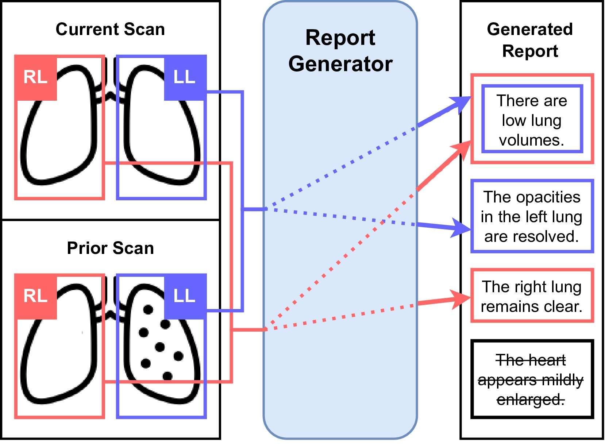
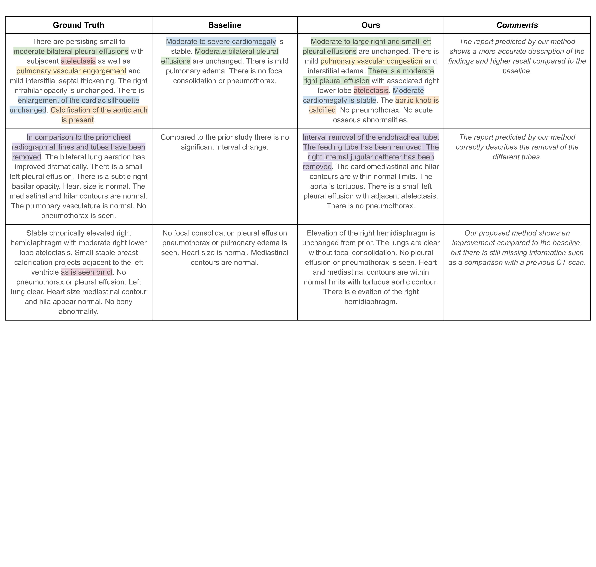
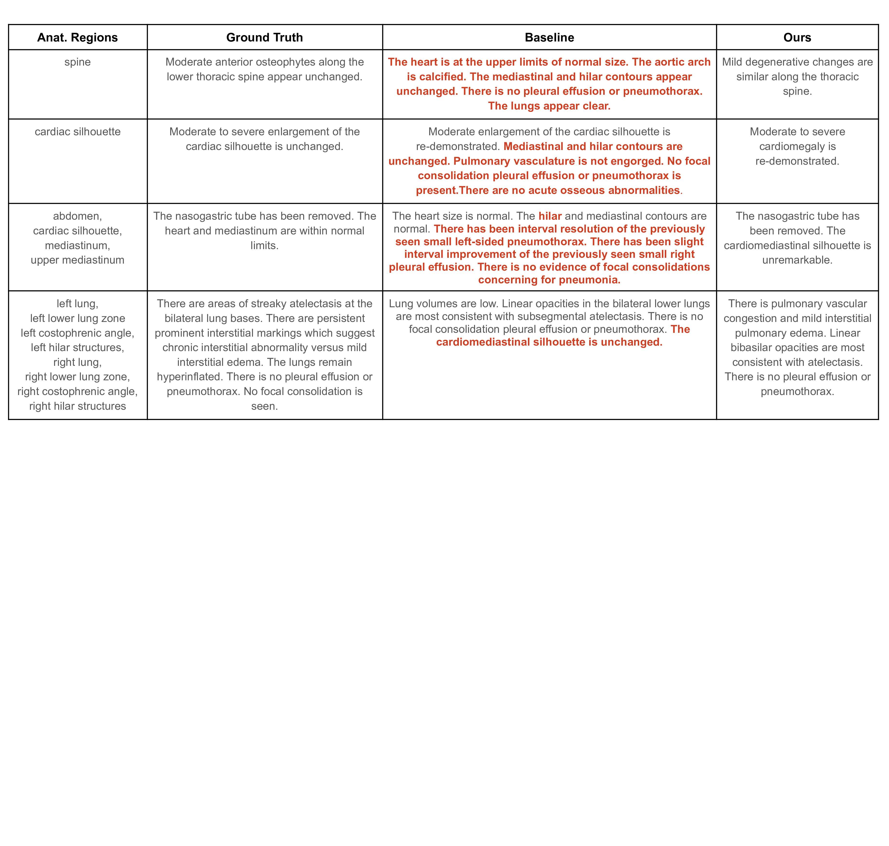

Illustration of our controllable automated reporting system using longitudinal representations. The report generator is trained to generate only sentences corresponding to the selected input anatomical regions. LL indicates the left lung and RL the right lung and we colour-match each region with the corresponding sentence. Strikethrough text represents the section of the report that we do not want the generated report to include when only the LL and RL are selected as inputs.

Architecture overview. The anatomical region representations of the current and prior CXRs are extracted from Faster R-CNN (visual anatomical token extraction). These are aligned, concatenated and projected into a joint representation (longitudinal projection module), then passed alongside the tokenised indication field as input to the language model to generate the report for the current scan. The Report Generator is trained end-to-end using sentence-anatomy dropout.

Qualitative results of full reports generation. We compare the reports generated by the baseline (without adding prior scans and sentence-anatomy training) and the proposed solution with the ground truth. We highlight using different colours the segments of the reports that are commented on in the right column.
